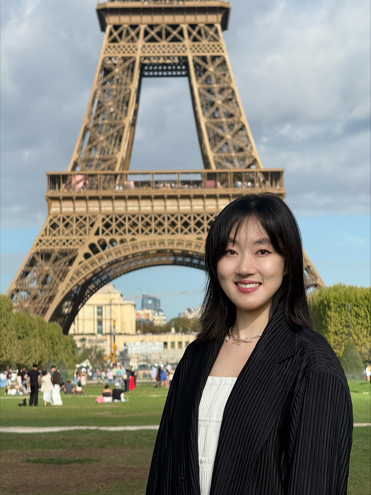

I am a PhD candidate at the Institute for Responsibility and Sustainability in Global Business at WU Vienna University of Economics and Business. I joined WU in November 2025, and my supervisor is Günter K. Stahl.
I hold a double master's degree: an MSc in International Business from the Stockholm School of Economics and a Master in International Management (CEMS) from WU Vienna, both completed in 2025. Before that, I received my BSc in International Business from Lund University.
I have a broad interest in international business, global mobility and multiculturalism, and corporate sustainability and social responsibility. My work focuses in particular on how managers' prior experiences shape their firms' sustainability and responsibility performance.